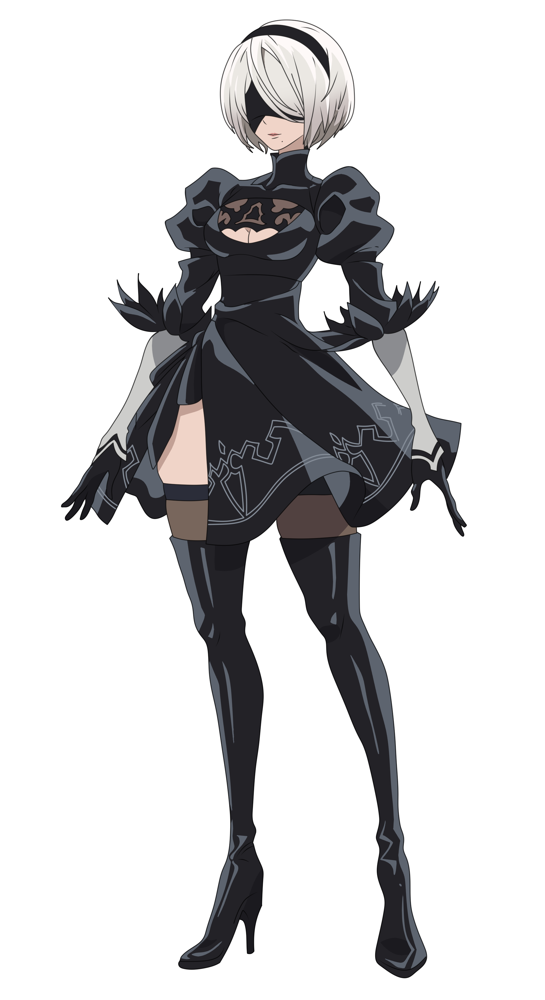

NieR Automata é um jogo de Action RPG da Square Enix. Criado por Yoko Taro, segue a história de um mundo devastado onde androides lutam contra máquinas para salvar a humanidade. O desenvolvimento começou em 2014, com o diretor Yoko Taro, o produtor Yosuke Saito e os compositores Keiichi Okabe e Keigo Hoashi retornando nas mesmas funções que tinham desempenhado no Nier original. A história foi baseada ao redor de temas similares aos trabalhos anteriores de Yoko, como o impulso para matar, ao mesmo tempo incorporando questões como o confronto do preconceito e a fuga de situações difíceis.
SOBRE O JOGO
